Префектура Хоккайдо · Фурано · ресторан
Le Gaulois Furano: французский шеф, итальянская кухня и четыре лошади за окном
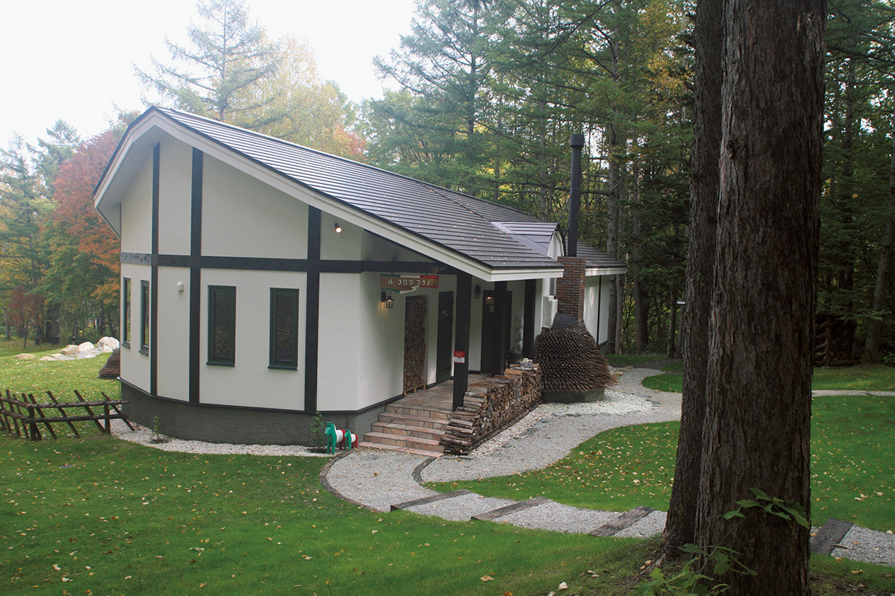
Двадцать лет повар Кэнъити Оцука возил продукты Хоккайдо в свой токийский ресторан. В 2016 году он закрыл его и уехал с женой туда, где эти продукты растут, а заодно и туда, где могут жить их лошади.
История
Из Токио в Фурано
Le Gaulois открылся в 1997 году в токийском Омотэсандо и стал одним из первых французских ресторанов, где гостей кормили за стойкой. В 2006 году он переехал в район Гайэнмаэ. Повар Кэнъити Оцука готовил под девизом «французская кухня Хоккайдо», его жена Кэйко отвечала за десерты и зал, и у ресторана появилось много преданных поклонников.
При этом у супругов был свой, очень твёрдый план на жизнь: поселиться на Хоккайдо вместе с любимыми лошадьми. В мае 2016 года они закрыли токийский ресторан и уехали в Фурано, городок в центре острова, известный полями и горами.
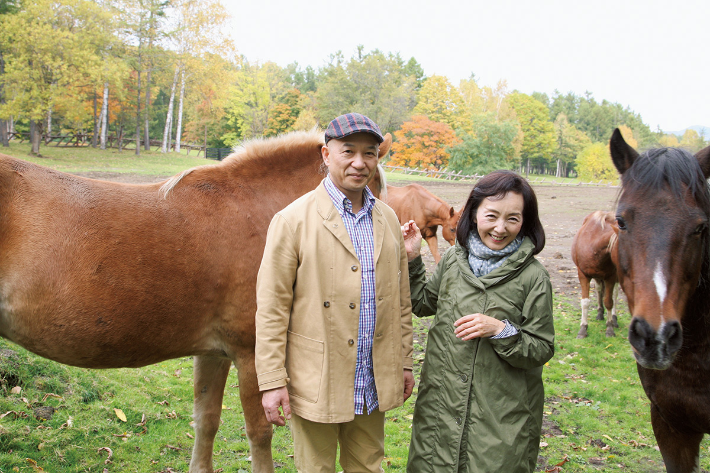
Лошади появились у Оцука больше десяти лет назад. Супруги узнали, что скаковых лошадей, которые после травмы уже не могут выступать, отправляют на убой, и стали забирать их к себе. Четверо, Лукас, Юки, Гэнки и Акари, переехали из Токио вместе с хозяевами. На Хоккайдо у Акари родилась Куруми, которую в 2018 году отдали на выучку в другое место. Землетрясения и тайфуны не раз срывали планы, но в конце концов табун обрёл дом рядом с рестораном. Утром и вечером Кэйко проводит время с лошадьми, и эти часы одинаково важны и для неё, и для них.
28 мая 2018 года на территории отеля «Син-Фурано Принс» открылся ресторан Le Gaulois Furano. О нём писали местные газеты и рассказывало телевидение, и с первого дня телефон для брони не замолкал. Многие удивлялись: разве Le Gaulois не французский ресторан? Всё верно. Но переезд супругов поддерживал живущий в Фурано сценарист Со Курамото, и его просьба звучала неожиданно: «Сделайте итальянский ресторан».
Оба сначала потеряли дар речи. Потом, пока шла подготовка к открытию, объехали Италию и учились как одержимые. Оцука всегда подбирал к каждому продукту точный способ приготовления, и в Фурано его кухня не стала смесью двух школ: она взяла от французской и итальянской всё лучшее сразу.
Продукты
На кухне тот же воздух, что и на грядке
Ещё в Токио Оцука закупал на Хоккайдо лучшие продукты. Особое место среди них занимали черри «Осама томато» от одного фермера: сладкие, кислые, с напором. «Для салата это идеальный акцент. Раньше на этих помидорах держалось многое в нашей кухне. Но для итальянской кухни нужны разные сорта», говорит повар.
Мелкие «Пути-пуё» с фермы Куроки с тонкой кожицей удобны в работе, а их средние помидоры отличаются густым и ровным вкусом. Сорт Sicilian Rouge с фермы «Хякусёя» при нагревании раскрывает вкус и годится для соусов. Солёные помидоры с фермы «Амрита» из Нисэко плотные, но нежные на вкус, и без них не обходится капрезе. Возможность каждое утро выбирать, какие взять сегодня, повар считает главной роскошью.
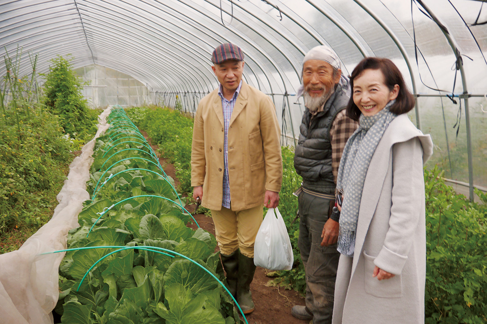
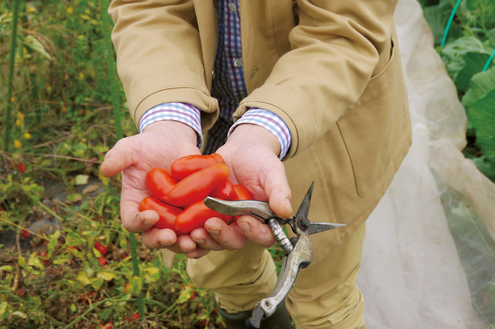
Перед работой Оцука заезжает к производителям и привозит на кухню только что сорванные помидоры, а к обеду они уже лежат на тарелках. «Свежесть другая, и вкус другой. Особенно это видно по кинки и камбале из Суцу. Такого мощного вкуса я раньше не знал».
Около двадцати лет супруги ездили по фермам Хоккайдо и брали только то, в чём были уверены сами: овощи с минимумом химии, рыбу и мясо от тех, кто бережно с ними обращается. Всё это им присылали в Токио. За работу с производителями и за продвижение безопасных продуктов в 2010 году Оцука получил бронзовую награду первой премии «Мастера кулинарии» Министерства сельского, лесного и рыбного хозяйства Японии. В Фурано он хотел находить новых поставщиков: в Токио их было около 30, после переезда стало почти 50. В Токио продукты Хоккайдо составляли 95% всего, что шло на кухню, а в Фурано почти 100%. «Особенно отличается рыба», удивляется повар.
Ресторан стоит на бывшем поле для гольфа: березовая роща, зелёный газон и белый дом с треугольной крышей. Часть стены закрывает работа «Колокол Голуа» из множества слоёв обтекаемых железных листьев, а в саду стоит скульптура из той же серии. Обе сделал Сюхэй Хасадо, мастер-штукатур с мировым именем. Из больших окон зала метров за триста видно, как неспешно пасутся четыре лошади. Без этого пейзажа итальянская кухня Оцука не сложилась бы: вкус здесь действительно рождается из земли и климата.
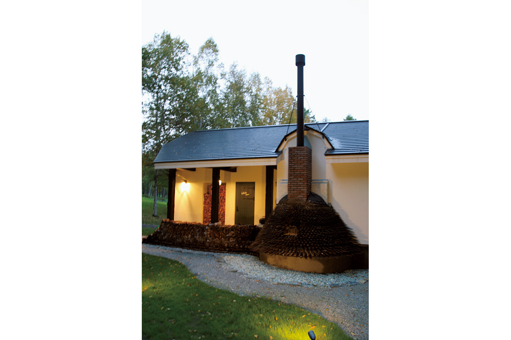
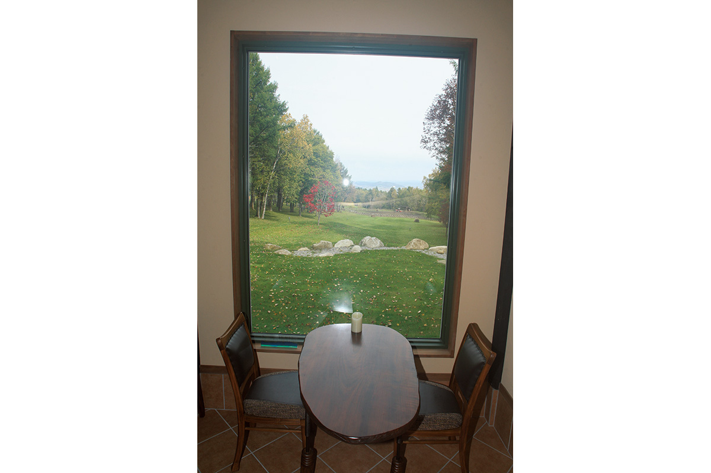
Осенью 2018 года зелень вокруг готовилась смениться сплошной белизной. Ресторан в снегу, наверное, похож на отдельный мир, а кухня к зиме запасается сезонными продуктами и становится ещё вкуснее.
Меню
Курс «омакасэ»: Хоккайдо целиком
Лучше всего продукты раскрываются в курсе «омакасэ», где сочетания выбирает повар. В 2018 году он стоил от 15 000 иен.
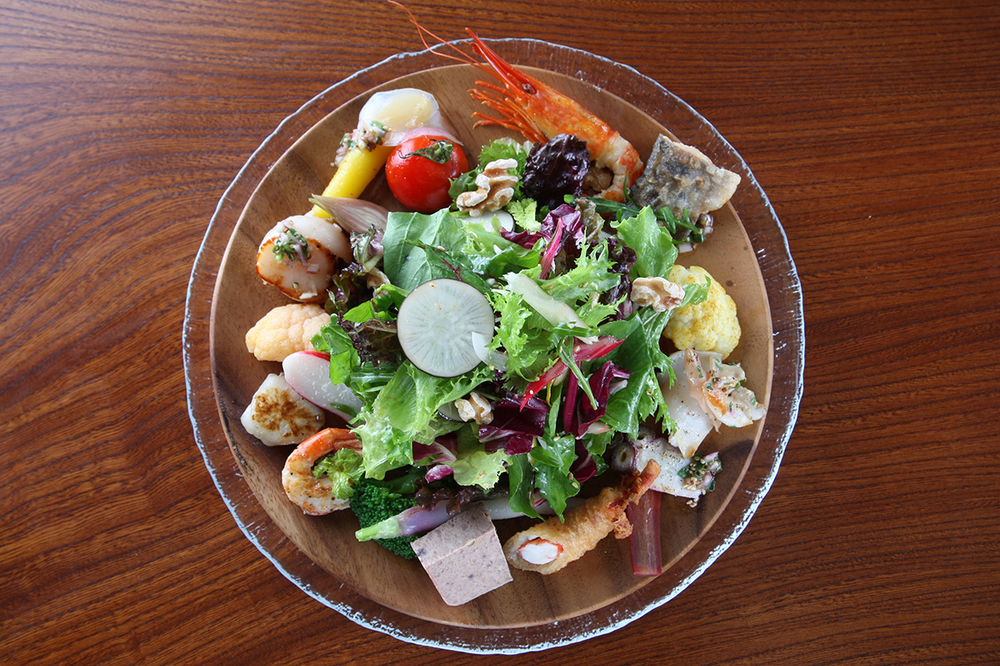
Сезонный салат Le Gaulois обязателен для поклонников ресторана: это дайджест его лучших блюд на одной тарелке. «На Хоккайдо овощей в нём становится всё больше», удивляется сам Оцука, и салат продолжает меняться. В нём помидоры «Осама томато», северная полосатая креветка, форель ямамэ, маринованная цветная капуста, трубач, осьминог, морковь, краб во фритюре, деревенский паштет, брокколи, репа хинона, креветка ботан-эби, топинамбур, гребешок на гриле, имбирь мёга, жёлтая морковь, горчичная зелень, салат, руккола, краснокочанная капуста, мангольд, белый лук, чёрная редька и грецкие орехи. Вечером его можно выбрать закуской в курсе прификс с доплатой 800 иен (2018 год).
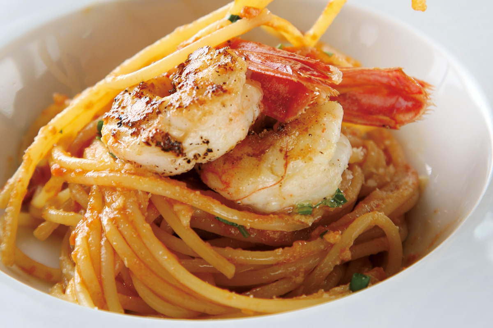
«Больше всего на Хоккайдо меня поразила свежесть рыбы. С тем, что я закупал в Токио, не сравнить». Креветок и крабов здесь ловят много, поэтому даже неровные экземпляры можно щедро пускать на соусы и супы. Соус для этой пасты сделан на основе мисо креветок ботан-эби, то есть их внутренностей. Итальянский подход, когда пасту и продукт едят как можно проще, Оцука берёт без лишних сомнений.
Капрезе, классическую закуску юга Италии, здесь собирают из солёных помидоров фермы «Амрита» и моцареллы сыроварни «Ракэйся». Яркая сладость и кислинка помидоров и мягкий свежий сыр работают как лучшая пара, и такое сочетание мог найти только повар с большим опытом.
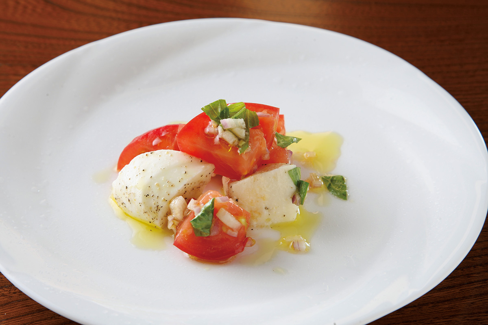
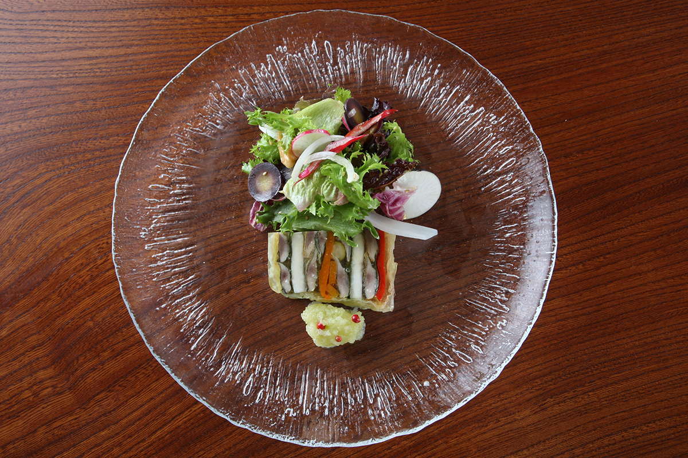
Полоска в середине террины это слои сайры из Аккэси с листьями сисо, репой и жёлтым перцем, а зелёный кружок впереди сделан из редьки. Свежая сайра в террине отдаёт свой вкус овощам, и они становятся вкуснее.
Гребешки из Суцу удивили даже Оцука, который думал, что хорошо знает Хоккайдо. На гриле их обжаривают снаружи до корочки, а внутри оставляют полусырыми, так сладость чувствуется сильнее. Под гребешок кладут рататуй и добавляют соус на сливочном масле.
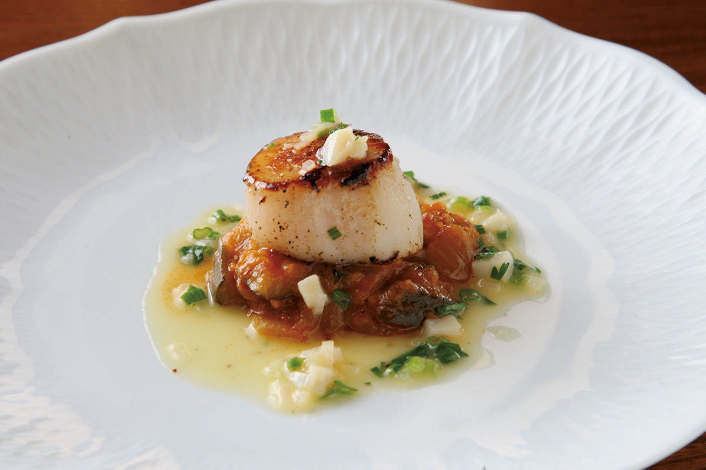
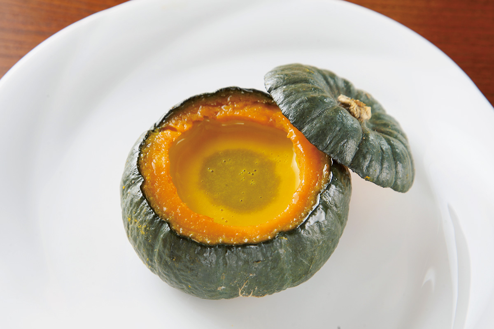
Суп входит в курс всегда. Осенью это тыква: мякоть вынимают и превращают в густой суп, а саму тыкву используют как посуду. Зимой слаще становятся репа, редька и лопух, а летом больше всего любят кукурузу.
Кинки, красного морского окуня из Раусу, Оцука тоже ценит очень высоко. Рыбу маринуют в уксусе с юдзу и запекают, подают с пюре из репы и тонким перцем химо-нанбан во фритюре с фермы «Хякусёя» из Биэя. Аромат юдзу и поджаристая рыба отлично ладят друг с другом.
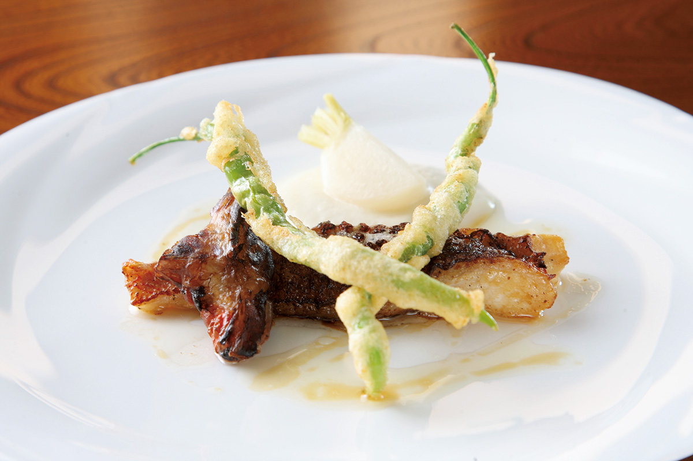
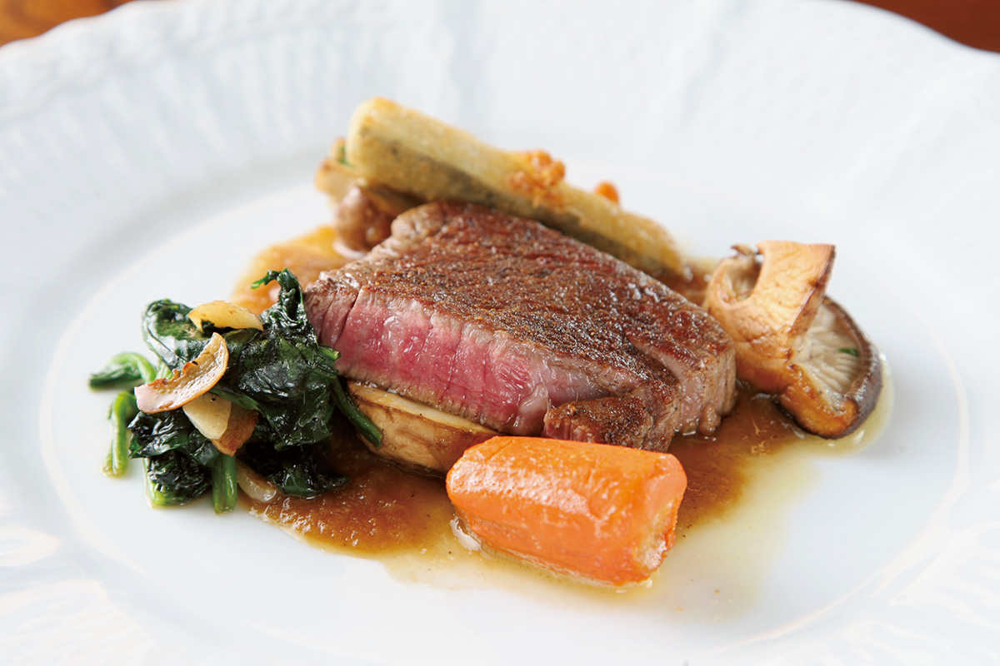
Говядину «Хосидзора-но курогю», «Чёрный бык звёздного неба», выращивают в Сибэтя. Это помесь японской чёрной породы вагю и голштинской: от первой мясо берёт сочную сладость, от второй хорошую постную мякоть. На гарнир подают дофинуа, картофельный гратен на густых сливках.
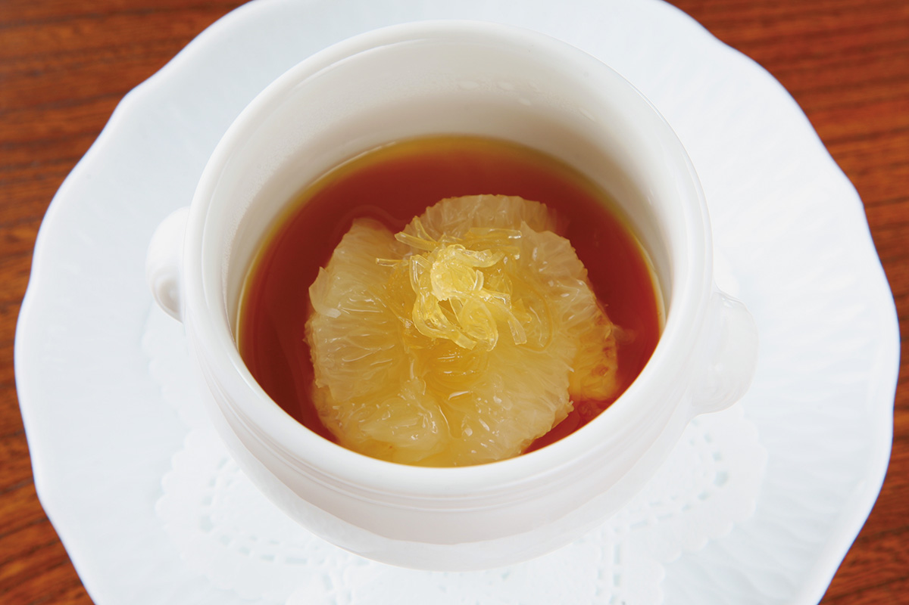
Грейпфрутовый пудинг Кэйко Оцука придумала ещё в токийские годы, и он стал визитной карточкой Le Gaulois. На пудинге лежит грейпфрут, вкус чуть горьковатый и свежий, поэтому десерт любят даже те, кто не ест сладкого. Его называют «вечным десертом».
Le Gaulois Furano
- Адрес
- префектура Хоккайдо, Фурано, Нака-Горё, отель «Син-Фурано Принс»
- Телефон
- +81 167-22-1123
- Часы работы
- 12:00–13:30 (последний заказ), 17:30–20:30 (последний заказ)
- Выходные
- понедельник, вторник
- Цены / Вход
- обед 3600 и 5000 иен, ужин «омакасэ» 10 000 и 15 000 иен, прификс 7800 иен (2018 год)
Фото: Мунэаки Маэда.